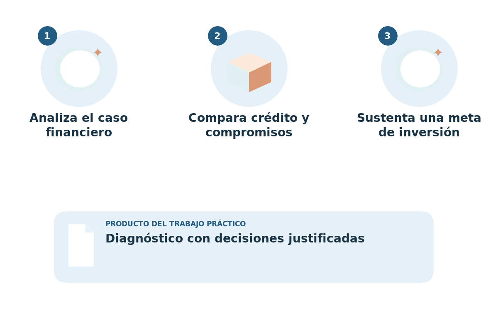

<div style="font-family: 'Segoe UI', Arial, sans-serif; color: #333; line-height: 1.6; max-width: 100%; margin-bottom: 20px;">
  <div style="background-color: #ffffff; background-image: linear-gradient(135deg, #ffffff 0%, #f8f9fa 100%); border: 1px solid #dee2e6; border-radius: 15px; padding: 25px 30px; box-shadow: 0 4px 12px rgba(0,0,0,0.05); position: relative; overflow: hidden;">
    <div style="position: absolute; left: 0; top: 0; bottom: 0; width: 6px; background: #0056b3;" aria-hidden="true"> </div>
    <div style="position: relative; z-index: 1;">
<h2 style="color: #1c3055; margin-top: 0; font-size: 1.4rem; font-weight: bold;">Entrega del Trabajo Práctico-Experimental de la Unidad 1</h2>
<p></p>

<p><strong>Asignatura:</strong> Fundamentos de Finanzas Personales y Empresariales<br>
<strong>Actividad: Ahorro o crédito para renovar un computador</strong><br><strong>Evidencia:</strong> Un expediente con la separación de cuentas, la comparación de ahorro y crédito, tres pruebas y un plan de metas.</p>
<p>Mateo tiene 23 años y trabaja con el negocio ficticio AndesCode. Necesita un computador de 1 200 dólares, pero mezcla el dinero del negocio con sus gastos personales. Usa los nueve movimientos de la tabla para revisar cuánto puede ahorrar y si puede asumir un crédito.</p>
<div style="overflow-x:auto;"><table class="table" style="width:100%;border-collapse:collapse;font-size:.9rem;"><thead><tr><th scope="col" style="padding:8px;background:#eef4fb;text-align:left;">Rubro del movimiento mensual</th><th scope="col" style="padding:8px;background:#eef4fb;text-align:left;">Tipo de movimiento</th><th scope="col" style="padding:8px;background:#eef4fb;text-align:left;">Monto mensual (dólares estadounidenses)</th></tr></thead><tbody><tr><td style="padding:8px;border-bottom:1px solid #dee2e6;vertical-align:top;">Cobros por desarrollo web y mantenimiento a clientes</td><td style="padding:8px;border-bottom:1px solid #dee2e6;vertical-align:top;">Ingreso</td><td style="padding:8px;border-bottom:1px solid #dee2e6;vertical-align:top;">1 100,00</td></tr><tr><td style="padding:8px;border-bottom:1px solid #dee2e6;vertical-align:top;">Tutorías tecnológicas particulares en fines de semana</td><td style="padding:8px;border-bottom:1px solid #dee2e6;vertical-align:top;">Ingreso</td><td style="padding:8px;border-bottom:1px solid #dee2e6;vertical-align:top;">150,00</td></tr><tr><td style="padding:8px;border-bottom:1px solid #dee2e6;vertical-align:top;">Servidor en la nube y dominio web de proyectos</td><td style="padding:8px;border-bottom:1px solid #dee2e6;vertical-align:top;">Egreso</td><td style="padding:8px;border-bottom:1px solid #dee2e6;vertical-align:top;">65,00</td></tr><tr><td style="padding:8px;border-bottom:1px solid #dee2e6;vertical-align:top;">Suscripción a herramientas de diseño y repositorio de código</td><td style="padding:8px;border-bottom:1px solid #dee2e6;vertical-align:top;">Egreso</td><td style="padding:8px;border-bottom:1px solid #dee2e6;vertical-align:top;">35,00</td></tr><tr><td style="padding:8px;border-bottom:1px solid #dee2e6;vertical-align:top;">Alimentación básica y servicios del hogar</td><td style="padding:8px;border-bottom:1px solid #dee2e6;vertical-align:top;">Egreso</td><td style="padding:8px;border-bottom:1px solid #dee2e6;vertical-align:top;">480,00</td></tr><tr><td style="padding:8px;border-bottom:1px solid #dee2e6;vertical-align:top;">Transporte y conexión de internet residencial</td><td style="padding:8px;border-bottom:1px solid #dee2e6;vertical-align:top;">Egreso</td><td style="padding:8px;border-bottom:1px solid #dee2e6;vertical-align:top;">95,00</td></tr><tr><td style="padding:8px;border-bottom:1px solid #dee2e6;vertical-align:top;">Cuota mensual de tarjeta de crédito por compras anteriores</td><td style="padding:8px;border-bottom:1px solid #dee2e6;vertical-align:top;">Egreso (deuda)</td><td style="padding:8px;border-bottom:1px solid #dee2e6;vertical-align:top;">140,00</td></tr><tr><td style="padding:8px;border-bottom:1px solid #dee2e6;vertical-align:top;">Comidas rápidas y plataformas de entretenimiento digital</td><td style="padding:8px;border-bottom:1px solid #dee2e6;vertical-align:top;">Egreso</td><td style="padding:8px;border-bottom:1px solid #dee2e6;vertical-align:top;">165,00</td></tr><tr><td style="padding:8px;border-bottom:1px solid #dee2e6;vertical-align:top;">Compras por impulso en tiendas digitales</td><td style="padding:8px;border-bottom:1px solid #dee2e6;vertical-align:top;">Egreso</td><td style="padding:8px;border-bottom:1px solid #dee2e6;vertical-align:top;">90,00</td></tr></tbody></table></div>
<p><strong>Qué completar</strong></p>
<ol><li>Separa los movimientos del negocio y los personales en una hoja de cálculo. Define un retiro fijo para Mateo; por ejemplo, 900 dólares y 100 de reserva del negocio, más los 150 de tutorías. Justifica tu elección.</li><li>Clasifica gastos personales en necesidades, deseos y deudas. Calcula el saldo disponible y qué porcentaje de ingresos se dedica a deseos y deuda.</li><li>Usa un simulador oficial de crédito y ahorro de la banca pública o una calculadora financiera gratuita equivalente. Compara la compra de 1 200 dólares a 12 meses con un ahorro que reduzca al menos 150 dólares mensuales de deseos. Guarda tasa consultada, cuota, intereses, costo total, fecha y entidad.</li><li>Comprueba tres situaciones: gastos ajustados; ingresos del negocio 20 % menores durante dos meses; y crédito sin reducir gastos ni mantener reserva. Explica si puede cubrir necesidades y cumplir la cuota o meta.</li><li>Propón una meta de 3 a 6 meses y otra de 12 a 18 meses. Indica monto, aporte mensual y prioridad.</li><li>Comprueba las sumas y reúne la hoja, las capturas y las conclusiones. Distingue los datos del caso de tus supuestos y cita el simulador. Explica por qué mezclar las cuentas cambia la lectura de la capacidad de pago.</li></ol>
<p><strong>Cómo entregar</strong></p>
<p>Entrega tu trabajo una sola vez al cierre de la semana 2. En esta Tarea de Moodle, selecciona <strong>Agregar entrega</strong>, adjunta tu evidencia y pulsa <strong>Guardar cambios</strong>. Si aparece <strong>Enviar tarea</strong>, púlsalo y comprueba el estado.</p>
<p><strong>Nombre del expediente:</strong> Apellido_Nombre_Trabajo_experimental_Unidad_1.</p>
<p><strong>Formato:</strong> Entrega un informe con la hoja de cálculo editable y las capturas del simulador. Puedes reunirlos en una carpeta comprimida.</p>
<p>Conserva el registro original del caso y anota las correcciones en tu expediente. Entrega el trabajo autónomo por separado.</p>
<details><summary style="color:#0056b3;font-weight:bold;cursor:pointer;">Rúbrica de la práctica · 16 puntos</summary><div style="overflow-x:auto;"><table class="table" style="width:100%;border-collapse:collapse;font-size:.9rem;"><thead><tr><th scope="col" style="padding:8px;background:#eef4fb;text-align:left;">Criterio y puntaje máximo</th><th scope="col" style="padding:8px;background:#eef4fb;text-align:left;">Completo (4 puntos · 100 %)</th><th scope="col" style="padding:8px;background:#eef4fb;text-align:left;">Adecuado (3 puntos · 75 %)</th><th scope="col" style="padding:8px;background:#eef4fb;text-align:left;">Parcial (2 puntos · 50 %)</th><th scope="col" style="padding:8px;background:#eef4fb;text-align:left;">Inicial (1 punto · 25 %)</th><th scope="col" style="padding:8px;background:#eef4fb;text-align:left;">Ausencia (0 puntos · 0 %)</th></tr></thead><tbody><tr><td style="padding:8px;border-bottom:1px solid #dee2e6;vertical-align:top;">1. Pertinencia del análisis <strong>(4 puntos)</strong></td><td style="padding:8px;border-bottom:1px solid #dee2e6;vertical-align:top;">Separa el dinero del negocio y el personal, clasifica necesidades, deseos y deuda y justifica el retiro de Mateo.</td><td style="padding:8px;border-bottom:1px solid #dee2e6;vertical-align:top;">Separa adecuadamente cuentas personales y comerciales con leves dudas en un rubro menor.</td><td style="padding:8px;border-bottom:1px solid #dee2e6;vertical-align:top;">Mezcla parcialmente rubros operativos del negocio con gastos personales o no distingue deseos de necesidades.</td><td style="padding:8px;border-bottom:1px solid #dee2e6;vertical-align:top;">Hay un intento evaluable. Mantiene todas las cifras mezcladas sin clasificar ni respetar los montos del caso.</td><td style="padding:8px;border-bottom:1px solid #dee2e6;vertical-align:top;">No presenta evidencia del criterio «Pertinencia del análisis» que permita evaluarlo.</td></tr><tr><td style="padding:8px;border-bottom:1px solid #dee2e6;vertical-align:top;">2. Aplicación conceptual <strong>(4 puntos)</strong></td><td style="padding:8px;border-bottom:1px solid #dee2e6;vertical-align:top;">Compara ahorro y crédito con el simulador, comprueba las tres situaciones y propone metas que puedan cumplirse.</td><td style="padding:8px;border-bottom:1px solid #dee2e6;vertical-align:top;">Ejecuta la comparativa en simulador y al menos dos escenarios con metas coherentes y detalles menores de cálculo.</td><td style="padding:8px;border-bottom:1px solid #dee2e6;vertical-align:top;">Realiza cálculos aislados sin usar simulador verificable o sin demostrar los escenarios límite y de riesgo.</td><td style="padding:8px;border-bottom:1px solid #dee2e6;vertical-align:top;">Hay un intento evaluable. Presenta recomendaciones generales sin respaldo numérico ni uso de herramientas financieras.</td><td style="padding:8px;border-bottom:1px solid #dee2e6;vertical-align:top;">No presenta evidencia del criterio «Aplicación conceptual» que permita evaluarlo.</td></tr><tr><td style="padding:8px;border-bottom:1px solid #dee2e6;vertical-align:top;">3. Calidad del entregable <strong>(4 puntos)</strong></td><td style="padding:8px;border-bottom:1px solid #dee2e6;vertical-align:top;">Integra informe claro, hoja de cálculo editable con fórmulas exactas, capturas del simulador y análisis ordenado en una sola entrega.</td><td style="padding:8px;border-bottom:1px solid #dee2e6;vertical-align:top;">Entrega informe y hoja de cálculo completos con pequeños detalles de presentación o etiquetado de celdas.</td><td style="padding:8px;border-bottom:1px solid #dee2e6;vertical-align:top;">Falta la hoja editable, las capturas del simulador o alguno de los apartados solicitados.</td><td style="padding:8px;border-bottom:1px solid #dee2e6;vertical-align:top;">Hay un intento evaluable. Entrega archivos incompletos o ilegibles que impiden verificar cálculos y procedimientos.</td><td style="padding:8px;border-bottom:1px solid #dee2e6;vertical-align:top;">No presenta evidencia del criterio «Calidad del entregable» que permita evaluarlo.</td></tr><tr><td style="padding:8px;border-bottom:1px solid #dee2e6;vertical-align:top;">4. Uso de fuentes y referencias <strong>(4 puntos)</strong></td><td style="padding:8px;border-bottom:1px solid #dee2e6;vertical-align:top;">Distingue cifras del caso de supuestos propios, declara herramientas de apoyo usadas y cita el simulador y fuentes consultadas en formato de citas de la guía.</td><td style="padding:8px;border-bottom:1px solid #dee2e6;vertical-align:top;">Registra fuentes y simulador consultado con leves imprecisiones de formato en la lista de referencias.</td><td style="padding:8px;border-bottom:1px solid #dee2e6;vertical-align:top;">Omite identificar la entidad o fecha del simulador consultado o confunde datos del caso con supuestos externos.</td><td style="padding:8px;border-bottom:1px solid #dee2e6;vertical-align:top;">Hay un intento evaluable. Inventa datos o tasas sin respaldo ni transparencia sobre fuentes o asistencia digital.</td><td style="padding:8px;border-bottom:1px solid #dee2e6;vertical-align:top;">No presenta evidencia del criterio «Uso de fuentes y referencias» que permita evaluarlo.</td></tr></tbody></table></div></details>
    </div>
  </div>
</div>

